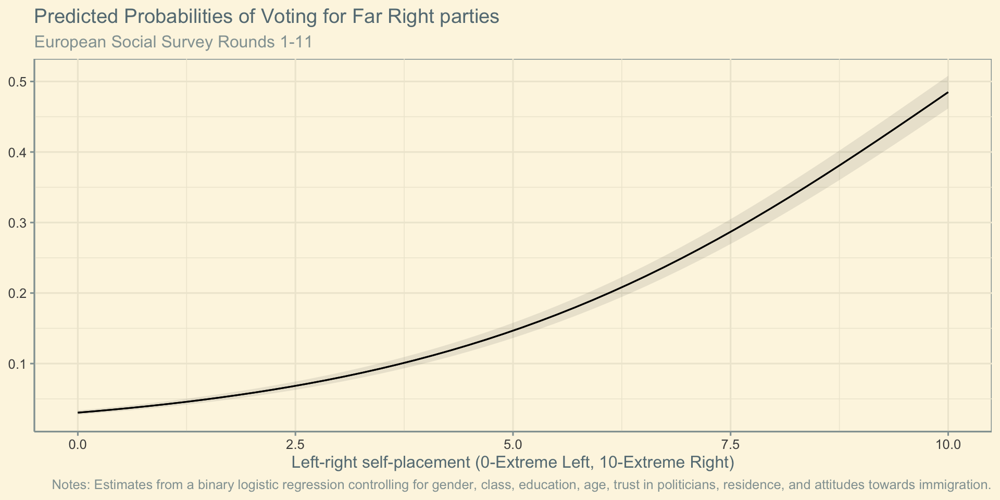
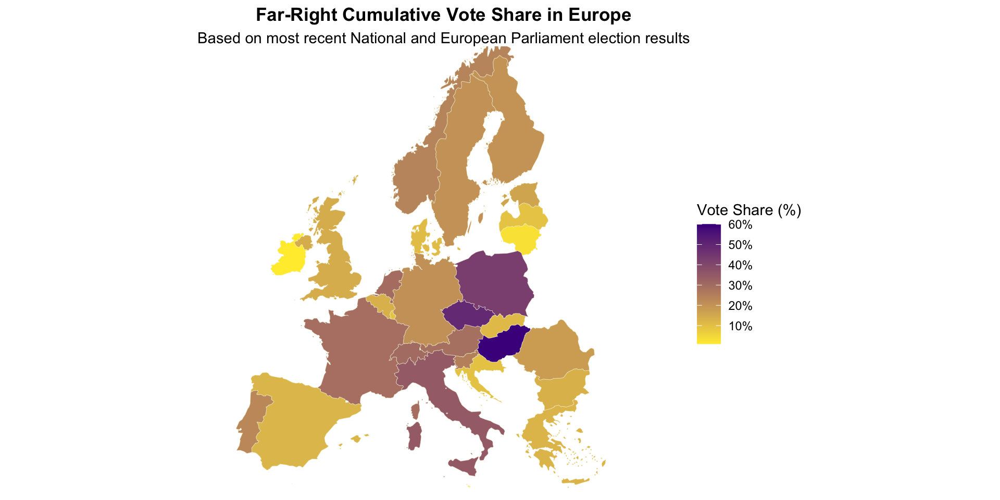
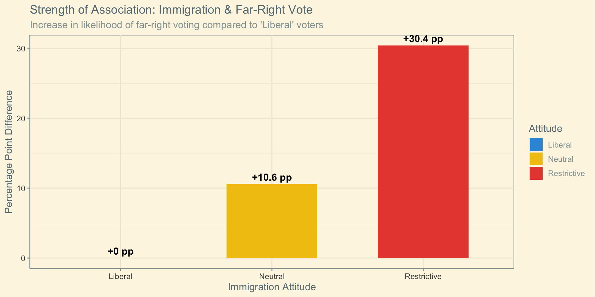
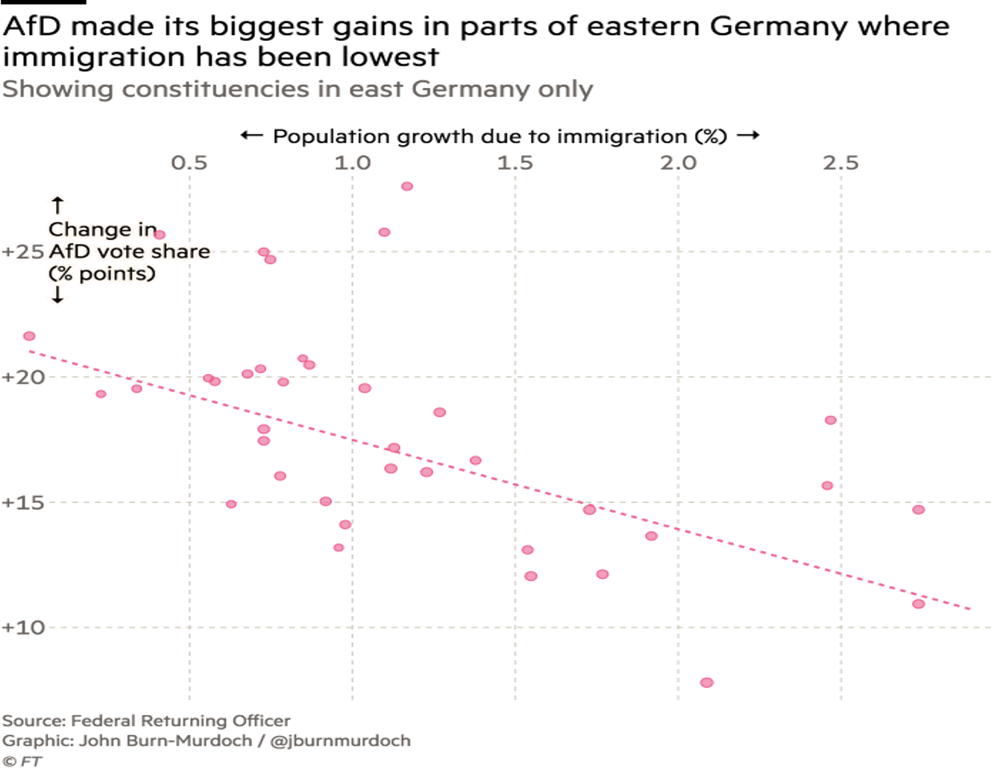
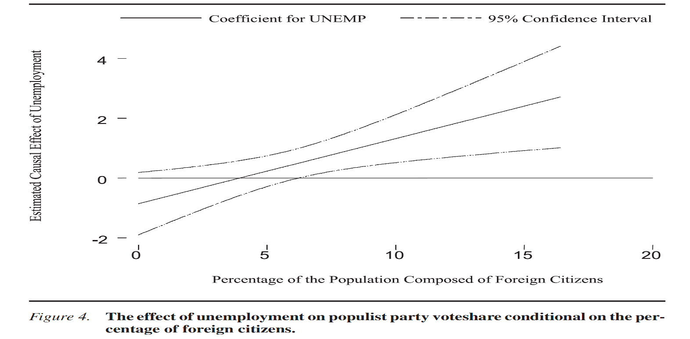

%%{init: {
'themeVariables': {
'fontSize': '24px',
'nodePadding': 20,
'nodeSpacing': 60,
'rankSpacing': 60
}
}}%%
flowchart TB
A[Types of<br/>Voting] --> B[Clientelist<br/>Voting]
A --> C[Idealistic<br/>Voting]
A --> D[Strategic<br/>Voting]
A --> E[Protest<br/>Voting]
B --> F[Southern Europe <br/> Corruption <br/> Personal interests]
C --> G[Ideological <br/> Policy Agreement]
D --> H[Electability <br/> Policy Proximity]
E --> I[Weak Proximity <br/> Large parties?]
Explaining variation in far-right support: Demand side
The Far Right (Week 7)
Dr. Christos Vrakopoulos
Today’s Lecture
- Part 1: Recap - The Empirical Puzzles
- Part 3: Micro-Level Demand - Who Votes Far-Right?
- Part 4: Macro-Level Demand - Economic Theories
- Part 5: Macro-Level Demand - Cultural Theories
- Part 6: Integration - Why Demand Alone Insufficient
Part 1: The Empirical Puzzles
What We’ve Learned (Weeks 2-6)
Breakthroughs happened:
- France (1984), Austria (1986)
- Sweden (2010), Finland (2011)
- Germany (2017), Spain (2018)
- Scandinavia: 15-20%
- Western Europe: 15-25%
But many puzzles:
- Germany 30-year delay
- Spain/Portugal: Crisis but no far-right (until 2018/2019)
- Eastern Europe: Mainstream radicalized instead
The Core Research Questions
“Why do some people develop far-right attitudes?”
“Why far right parties are successful in some countries but not in others?”
How to answer these questions?
Demand-side
- Attitudinal/ mass related/ contextual factors
- ‘Normal pathology thesis’
- Macro/Micro Level Explanations
Supply-side
- External: Political Opportunity Structures (POS) and Internal: Discursive Opportunity Structures (DOS)
- Party organization: canvassing/tactics
- Ideological
- ‘Pathological normalcy’
The “Normal Pathology” Thesis
Key Premise
Far-right parties represent abnormal values alien to Western democratic culture
Research question derived:
“Under what extreme conditions do abnormal attitudes emerge?”
- Economic crisis
- Social breakdown
- Immigration surge
- Political corruption
Implication:
Far-right success = systemic crisis, pathological deviation from democratic norms
Part 2: Theories of Demand
Unit of Analysis
- Micro-level
- Individual level characteristics/theorisation about why
- Who is more likely to vote for the far-right
- Macro-level
- Contextual characteristics: economy, immigration, historical and social developments
- Allow for explaining cross-national or cross-regional within country variation
- Allow for explaining similar developments in different conditions
Types of Voting
Before delving into the theories we first need to understand broadly speaking how people vote
- Far-right as protest: Why? Far-right parties targeted as dangerous outliers, so if someone wants to protest they would vote for them
BUT…
Left-right self-placement one of the strongest predictors
BUT… (cont.)
Who Votes Far-Right? The Predictions
- The so-called usual suspects
But who are they?
- Age → Younger
- Class → Working class
- Education → Lower
- Gender → Male
- Residence → Rural/Peripheral
What do they have in common?
Common characteristic

- Key question: Why?
Economic Grievance Model
Realistic Group Conflict
%%{init: {
'themeVariables': {
'fontSize': '26px',
'nodePadding': 22,
'nodeSpacing': 62,
'rankSpacing': 62
}
}}%%
flowchart LR
A[Economic Scarcity] --> B[Competition over <br/> resources]
B --> C[In-group vs <br/> out-group]
C --> D[Far Right <br/> mobilisation]
D --> E[Higher support]
%% Define a class for black text
classDef blackText color:#000;
%% Apply the class to all nodes
class A,B,C,D,E blackText;
%% Uniform Style for all nodes
classDef lightGrey fill:#F5F5F5,stroke:#333,stroke-width:2px,color:#000;
class A,B,C,D,E lightGrey;
Modernisation Losers
%%{init: {
'themeVariables': {
'fontSize': '26px',
'nodePadding': 22,
'nodeSpacing': 62,
'rankSpacing': 62
}
}}%%
flowchart LR
A[Globalisation <br/> Deindustrialisation] --> B[Skill-biased chages]
B --> C[Losers vs Winners]
C --> D[Status and <br/> economic <br/> insecurity]
D --> E[Resentment]
E --> F[Higher Support]
%% Define a class for black text
classDef blackText color:#000;
%% Apply the class to all nodes
class A,B,C,D,E,F blackText;
%% Uniform Style for all nodes
classDef lightGrey fill:#F5F5F5,stroke:#333,stroke-width:2px,color:#000;
class A,B,C,D,E,F lightGrey;
Economic Grievances (cont.)
If economic crisis drives far-right success, we should see uniform surge after 2008
The Southern European Puzzle (Again!)


Halikiopoulou, D., and Vasilopoulou, S. 2018. Breaching the Social Contract: Crises of Democratic Representation and Patterns of Extreme Right Party Support. Government and Opposition 53 (1): 26–50. doi:10.1017/gov.2015.43
Welfare State Matters (Vlandas and Halikiopoulou, 2016)
Key insight: It’s not about aggregate crisis severity
It’s about institutional structures that create vulnerability
Their argument:
- Focus on labour market risk
- And welfare state generosity
- Interaction creates vulnerability
- Some workers more exposed than others
The mechanism:
- High labour market flexibility = high risk
- Low welfare generosity = low protection
- High risk + Low welfare = vulnerability
- Vulnerable workers → far-right
The Psychology of Vulnerability: Status & Decline
1. Subjective Social Status
Gidron & Hall (2017): It’s not just money; it’s social respect. Low subjective rank drives the demand.
2. Downward Mobility
Gugushvili et al. (2025): The trajectory matters. Moving from high to low class creates acute resentment.
3. The Fear of Falling
Engler & Weisstanner (2021): Inequality creates a “threat of decline” that mobilizes even the middle class.
%%{init: {
'themeVariables': {
'fontSize': '22px',
'nodePadding': 20,
'nodeSpacing': 50,
'rankSpacing': 50
}
}}%%
flowchart LR
A[Inequality & <br/> Structural Change] --> B{The Trajectory}
B -->|Downward| C[Experience of <br/> Social Decline]
B -->|Risk of| D[Fear of <br/> Falling]
C --> E[Status Anxiety & <br/> Resentment]
D --> E
E --> F[Far-Right <br/> Support]
classDef highlight fill:#f9f,stroke:#333,stroke-width:2px;
classDef paper fill:#e1f5fe,stroke:#01579b,stroke-width:2px,color:#01579b;
class E,F highlight;
class A,B,C,D paper;
Cultural Grievances
Social Identity Theory
%%{init: {
'themeVariables': {
'fontSize': '26px',
'nodePadding': 22,
'nodeSpacing': 62,
'rankSpacing': 62
}
}}%%
flowchart LR
A[Immigration] --> B[Competition over <br/> culture]
B --> C[In-group vs <br/> out-group]
C --> D[Rising far-right <br/> attitudes]
D --> E[Higher support]
%% Define a class for black text
classDef blackText color:#000;
%% Apply the class to all nodes
class A,B,C,D,E blackText;
%% Uniform Style for all nodes
classDef lightGrey fill:#F5F5F5,stroke:#333,stroke-width:2px,color:#000;
class A,B,C,D,E lightGrey;
But who are they?
- Age → Older
- Class → Not necessarily working class
- Education → Lower
- Gender → Male
- Residence → Peripheral
- Values → Authoritarian/Egoist
BUT…
BUT…(cont.)
How to Explain these?
Contact Theory
%%{init: {
'themeVariables': {
'fontSize': '26px',
'nodePadding': 22,
'nodeSpacing': 62,
'rankSpacing': 62
}
}}%%
flowchart LR
A[High out-group] --> B[positive experience]
B --> C[Greater knowledge]
C --> D[Reduced anxiety]
D --> E[More tolerance]
%% Define a class for black text
classDef blackText color:#000;
%% Apply the class to all nodes
class A,B,C,D,E blackText;
%% Uniform Style for all nodes
classDef lightGrey fill:#F5F5F5,stroke:#333,stroke-width:2px,color:#000;
class A,B,C,D,E lightGrey;
Cosmopolitanism (see Maxwell)
%%{init: {
'themeVariables': {
'fontSize': '26px',
'nodePadding': 22,
'nodeSpacing': 62,
'rankSpacing': 62
}
}}%%
flowchart LR
A[High immigration <br/> Urban settings] --> B[Global skills <br/> identities]
B --> C[Exposure to diversity]
C --> D[Cosmopolitanism]
D --> E[Tolerance]
%% Define a class for black text
classDef blackText color:#000;
%% Apply the class to all nodes
class A,B,C,D,E,F blackText;
%% Uniform Style for all nodes
classDef lightGrey fill:#F5F5F5,stroke:#333,stroke-width:2px,color:#000;
class A,B,C,D,E,F lightGrey;
- Cultural grievances are real but mediated by contact, local context, and cosmopolitan–communitarian divides.
So, what about when Immigration is high but economy poor?
Conclusions
Summary: The Drivers of Far-Right Support
1. Beyond “Protest”
Far-right voting reflects stable ideological preferencesrather than just temporary frustration.
2. Economic vs. Cultural Grievances
- Economic: Insecurity and relative deprivation fuel support.
- Cultural: Values regarding gender, cosmopolitanism, and multiculturalism are often the primary drivers.
3. Cultural Grievances vs. Contact
- Cultural Threat: Perceptions of threat can drive support.
- Contact/Cosmopolitanism: Local interaction can reduce prejudice.
- Geographic Variance: Patterns in Eastern Europe and Germany suggest complex “threat” stories.
4. So what then?
Demand is necessary, but is it sufficient?